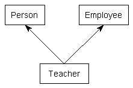

So far, all of the examples of inheritance we’ve presented have been single inheritance -- that is, each inherited class has one and only one parent. However, C++ provides the ability to do multiple inheritance. Multiple inheritance enables a derived class to inherit members from more than one parent.
Let’s say we wanted to write a program to keep track of a bunch of teachers. A teacher is a person. However, a teacher is also an employee (they are their own employer if working for themselves). Multiple inheritance can be used to create a Teacher class that inherits properties from both Person and Employee. To use multiple inheritance, simply specify each base class (just like in single inheritance), separated by a comma.

#include <string>
#include <string_view>
class Person
{
private:
std::string m_name{};
int m_age{};
public:
Person(std::string_view name, int age)
: m_name{ name }, m_age{ age }
{
}
const std::string& getName() const { return m_name; }
int getAge() const { return m_age; }
};
class Employee
{
private:
std::string m_employer{};
double m_wage{};
public:
Employee(std::string_view employer, double wage)
: m_employer{ employer }, m_wage{ wage }
{
}
const std::string& getEmployer() const { return m_employer; }
double getWage() const { return m_wage; }
};
// Teacher publicly inherits Person and Employee
class Teacher : public Person, public Employee
{
private:
int m_teachesGrade{};
public:
Teacher(std::string_view name, int age, std::string_view employer, double wage, int teachesGrade)
: Person{ name, age }, Employee{ employer, wage }, m_teachesGrade{ teachesGrade }
{
}
};
int main()
{
Teacher t{ "Mary", 45, "Boo", 14.3, 8 };
return 0;
}Mixins
A mixin (also spelled “mix-in”) is a small class that can be inherited from in order to add properties to a class. The name mixin indicates that the class is intended to be mixed into other classes, not instantiated on its own.
In the following example, the
Box
,
Label
, and
Tooltip
classes are mixins that we inherit from in order to create a new
Button
class.
// h/t to reader Waldo for this example
#include <string>
struct Point2D
{
int x{};
int y{};
};
class Box // mixin Box class
{
public:
void setTopLeft(Point2D point) { m_topLeft = point; }
void setBottomRight(Point2D point) { m_bottomRight = point; }
private:
Point2D m_topLeft{};
Point2D m_bottomRight{};
};
class Label // mixin Label class
{
public:
void setText(const std::string_view str) { m_text = str; }
void setFontSize(int fontSize) { m_fontSize = fontSize; }
private:
std::string m_text{};
int m_fontSize{};
};
class Tooltip // mixin Tooltip class
{
public:
void setText(const std::string_view str) { m_text = str; }
private:
std::string m_text{};
};
class Button : public Box, public Label, public Tooltip {}; // Button using three mixins
int main()
{
Button button{};
button.Box::setTopLeft({ 1, 1 });
button.Box::setBottomRight({ 10, 10 });
button.Label::setText("Submit");
button.Label::setFontSize(6);
button.Tooltip::setText("Submit the form to the server");
}
You may be wondering why we use explicit
Box::
,
Label::
, and
Tooltip::
scope resolution prefixes when this isn’t necessary in most cases.
-
Label::setText()andTooltip::setText()have the same prototype. If we calledbutton.setText(), the compiler would produce an ambiguous function call compilation error. In such cases, we must use the prefix to disambiguate which version we want. - In non-ambiguous cases, using the mixin name provides documentation as to which mixin the function call applies to, which helps make our code easier to understand.
- Non-ambiguous cases may become ambiguous in the future if we add additional mixins. Using explicit prefixes helps prevent this from occurring.
For advanced readers
Because mixins are designed to add functionality to the derived class, not to provide an interface, mixins typically do not use virtual functions (covered in the next chapter). Instead, if a mixin class needs to be customized to work in a particular way, templates are typically used. For this reason, mixin classes are often templatized.
Perhaps surprisingly, a derived class can inherit from a mixin base class using the derived class as a template type parameter. Such inheritance is called Curiously Recurring Template Pattern (CRTP for short), which looks like this:
// The Curiously Recurring Template Pattern (CRTP)
template <class T>
class Mixin
{
// Mixin<T> can use template type parameter T to access members of Derived
// via (static_cast<T*>(this))
};
class Derived : public Mixin<Derived>
{
};You can find a simple example using CRTP here .
Problems with multiple inheritance
While multiple inheritance seems like a simple extension of single inheritance, multiple inheritance introduces a lot of issues that can markedly increase the complexity of programs and make them a maintenance nightmare. Let’s take a look at some of these situations.
First, ambiguity can result when multiple base classes contain a function with the same name. For example:
#include <iostream>
class USBDevice
{
private:
long m_id {};
public:
USBDevice(long id)
: m_id { id }
{
}
long getID() const { return m_id; }
};
class NetworkDevice
{
private:
long m_id {};
public:
NetworkDevice(long id)
: m_id { id }
{
}
long getID() const { return m_id; }
};
class WirelessAdapter: public USBDevice, public NetworkDevice
{
public:
WirelessAdapter(long usbId, long networkId)
: USBDevice { usbId }, NetworkDevice { networkId }
{
}
};
int main()
{
WirelessAdapter c54G { 5442, 181742 };
std::cout << c54G.getID(); // Which getID() do we call?
return 0;
}
When
c54G.getID()
is compiled, the compiler looks to see if WirelessAdapter contains a function named getID(). It doesn’t. The compiler then looks to see if any of the parent classes have a function named getID(). See the problem here? The problem is that c54G actually contains TWO getID() functions: one inherited from USBDevice, and one inherited from NetworkDevice. Consequently, this function call is ambiguous, and you will receive a compiler error if you try to compile it.
However, there is a way to work around this problem: you can explicitly specify which version you meant to call:
int main()
{
WirelessAdapter c54G { 5442, 181742 };
std::cout << c54G.USBDevice::getID();
return 0;
}While this workaround is pretty simple, you can see how things can get complex when your class inherits from four or six base classes, which inherit from other classes themselves. The potential for naming conflicts increases exponentially as you inherit more classes, and each of these naming conflicts needs to be resolved explicitly.
Second, and more serious is the diamond problem , which your author likes to call the “diamond of doom”. This occurs when a class multiply inherits from two classes which each inherit from a single base class. This leads to a diamond shaped inheritance pattern.
For example, consider the following set of classes:
class PoweredDevice
{
};
class Scanner: public PoweredDevice
{
};
class Printer: public PoweredDevice
{
};
class Copier: public Scanner, public Printer
{
};

Scanners and printers are both powered devices, so they derived from PoweredDevice. However, a copy machine incorporates the functionality of both Scanners and Printers.
There are many issues that arise in this context, including whether Copier should have one or two copies of PoweredDevice, and how to resolve certain types of ambiguous references. While most of these issues can be addressed through explicit scoping, the maintenance overhead added to your classes in order to deal with the added complexity can cause development time to skyrocket. We’ll talk more about ways to resolve the diamond problem in the next chapter (lesson 25.8 -- Virtual base classes ).
Is multiple inheritance more trouble than it’s worth?
As it turns out, most of the problems that can be solved using multiple inheritance can be solved using single inheritance as well. Many object-oriented languages (eg. Smalltalk, PHP) do not even support multiple inheritance. Many relatively modern languages such as Java and C# restrict classes to single inheritance of normal classes, but allow multiple inheritance of interface classes (which we will talk about later). The driving idea behind disallowing multiple inheritance in these languages is that it simply makes the language too complex, and ultimately causes more problems than it fixes.
Many authors and experienced programmers believe multiple inheritance in C++ should be avoided at all costs due to the many potential problems it brings. Your author does not agree with this approach, because there are times and situations when multiple inheritance is the best way to proceed. However, multiple inheritance should be used extremely judiciously.
As an interesting aside, you have already been using classes written using multiple inheritance without knowing it: the iostream library objects std::cin and std::cout are both implemented using multiple inheritance!
Best practice
Avoid multiple inheritance unless alternatives lead to more complexity.